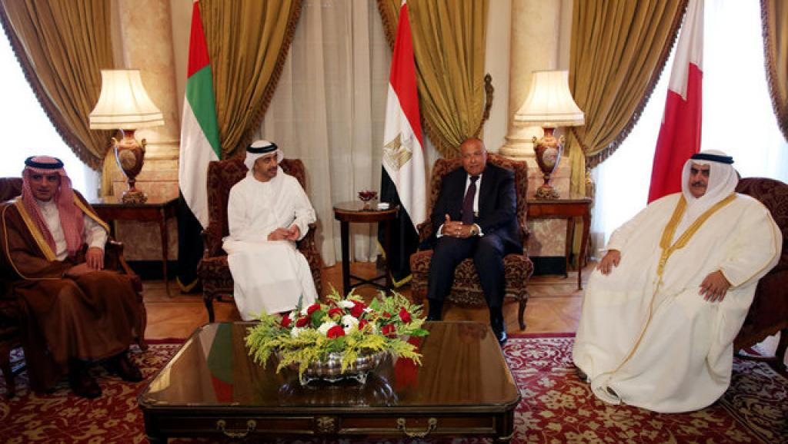

四国联盟宣布愿意“有条件与卡塔尔进行谈判”
文章来源:http://news.mingjingnews.com/2017/07/blog-post_8322.html
发稿日期:2017/7/31

四国外交大臣和外长7月5日于埃及首都开罗举行会议时的资料图片 (REUTERS)
由沙特阿拉伯、阿联酋、巴林和埃及组成的四国联盟外交大臣和外长们在周日宣布，如果卡塔尔方面表露出诚意，他们愿意与其代表进行谈判，
以此结束这一耗时近2个月的断交危机事件。
据路透社消息介绍，上述四国外长在周日于巴林首都麦纳麦，就卡塔尔断交危机以及该事件在中东地区所造成的外交影响进行商议。就目前来看，
由他们的邻国科威特在西方国家支持下的调解努力并没有完全失败，在此次会议后巴林外长哈里发(Sheikh Khaled bin Ahmed al-Khalifa)在记者会上宣称：
“四国联盟愿意与卡塔尔开展谈判，但卡方必须公开宣布其诚意，停止向恐怖和极端主义提供经济援助，不再干涉他国外交事务和接受四国之前提出的13点清要求单内容。”
除此之外，四国联盟还提出希望卡塔尔政府在今后能接受他们制定的“6个施政原则”。四国联盟并没有向卡塔尔提出新的经济制裁措施。
自危机爆发后，四国联盟曾在6月23日向卡塔尔提出了“13点要求清单”的最后通牒，作为解决断交危机的条件，并限定卡塔尔在10日内予以答复。
清单内容包括让卡塔尔缩减与伊朗的关系，与穆斯林兄弟会断绝关系，并关闭半岛电视台的媒体网络，关闭卡塔尔的土耳其军事基地等措施。
而伊朗则是沙特在该地区的主要竞争对手。.但这一要求遭到了卡方的拒绝。沙特外长因此指责卡塔尔并没有诚意接受盟国条件，
但卡塔尔外交大臣则反击声称四国盟国在处理此次外交危机上“态度固执”。
分析认为，四国联盟的此次表态似乎并没有做出让步，面对被禁运和封锁困境卡塔尔的命运很大程度上依赖于其伙伴国家伊朗和土耳其能对其提供帮助的程度，
以及西方国家的进一步表态。
法广RFI弗林